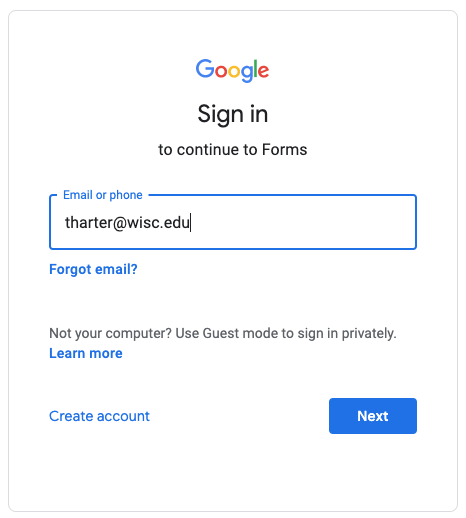

For non-anonymous forms, we will often require you to fill in this form using your "@wisc.edu" signin; this allows us to verify who you are. If you try using a different signin on one of these, you'll see an error saying "You need permission: This form can only be viewed by users in the owner's organization." If Google automatically signs in for you, please open the link in a "New Incognito Window" in Chrome.
1. Who are you? To help us better understand who is taking this class, please fill this out.
2. Feedback Form. If you have any issues with the class or suggestions for improvement, please let us know sooner rather than later.
3. Thank You! Has a TA provided exceptional help, during office hours, piazza, etc? Thank them by filling out this form, and I'll pass along the feedback.
4. Partner Form For each project, you should fill this once to indicate whether you're doing the project alone or with a partner. Only one partner should do the submission. You can change partners each project, but not during a project. Do NOT submit a person as your partner unless you've discussed with them in advance and mutually agreed to work together.
For forms requiring authentication, make sure you sign in with your @wisc.edu, like this:
